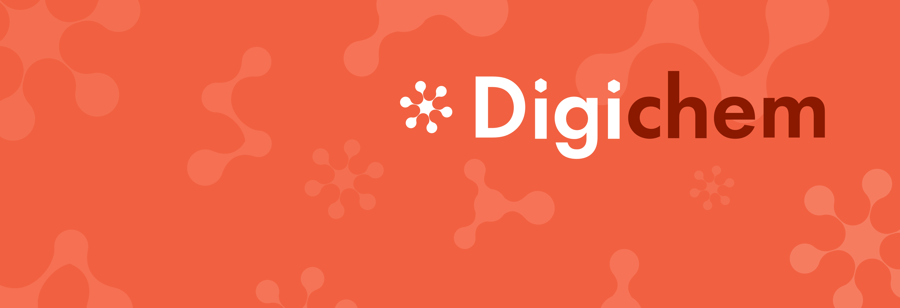

Welcome to Digichem’s documentation!#
Welcome to Digichem, the computational management suite. Digichem is a program designed to manage every part of the computational chemistry pipeline. From the submission of calculations to the generation of data, everything is handled for you, automatically.
Start here#
Simple how-to guides designed for new users.
Installation guides#
For more complex installation types, and for troubleshooting installation problems.
Core concepts#
Explanations and guides to core concepts, both within the Digichem framework and more generally in relation to quantum chemistry.
- Core concepts: Digichem
- Core concepts: quantum chemistry
- Calculation types, and what they are for
- Calculation methods, and which to choose
- Solvent methods, and which to choose
- Basis sets, and which to choose
- Charge and multiplicity
- Computational resources (how long will my calculation take?)
- Clusters, queues, and partitions
- Computational engines, and which to choose
- Calculation results, and what they mean
- Graphical results, and what they mean
- Rendering engines, and which to choose
How to interact with the program#
An overview of the different interfaces that Digichem supports.
User guides#
In-depth user guides covering how to use various parts of the program. These guides are broken down by interface type.
Changelog#
View the update history of the program.
Bibliography#
Carlo Adamo and Vincenzo Barone. Toward reliable density functional methods without adjustable parameters: The PBE0 model. The Journal of Chemical Physics, 110(13):6158–6170, 04 1999. URL: https://doi.org/10.1063/1.478522, arXiv:https://pubs.aip.org/aip/jcp/article-pdf/110/13/6158/19068890/6158\_1\_online.pdf, doi:10.1063/1.478522.
Amy Austin, George A. Petersson, Michael J. Frisch, Frank J. Dobek, Giovanni Scalmani, and Kyle Throssell. A density functional with spherical atom dispersion terms. Journal of Chemical Theory and Computation, 8(12):4989–5007, 2012. PMID: 26593191. URL: https://doi.org/10.1021/ct300778e, arXiv:https://doi.org/10.1021/ct300778e, doi:10.1021/ct300778e.
M. A. Baldo, M. E. Thompson, and S. R. Forrest. High-efficiency fluorescent organic light-emitting devices using a phosphorescent sensitizer. Nature, 403(6771):750–753, Feb 2000. URL: https://doi.org/10.1038/35001541, doi:10.1038/35001541.
Eike Caldeweyher, Christoph Bannwarth, and Stefan Grimme. Extension of the D3 dispersion coefficient model. The Journal of Chemical Physics, 147(3):034112, 07 2017. URL: https://doi.org/10.1063/1.4993215, arXiv:https://pubs.aip.org/aip/jcp/article-pdf/doi/10.1063/1.4993215/14782597/034112\_1\_online.pdf, doi:10.1063/1.4993215.
Eike Caldeweyher, Sebastian Ehlert, Andreas Hansen, Hagen Neugebauer, Sebastian Spicher, Christoph Bannwarth, and Stefan Grimme. A generally applicable atomic-charge dependent London dispersion correction. The Journal of Chemical Physics, 150(15):154122, 04 2019. URL: https://doi.org/10.1063/1.5090222, arXiv:https://pubs.aip.org/aip/jcp/article-pdf/doi/10.1063/1.5090222/15559428/154122\_1\_online.pdf, doi:10.1063/1.5090222.
Ove Christiansen, Henrik Koch, and Poul Jørgensen. The second-order approximate coupled cluster singles and doubles model cc2. Chemical Physics Letters, 243(5):409–418, 1995. URL: https://www.sciencedirect.com/science/article/pii/000926149500841Q, doi:https://doi.org/10.1016/0009-2614(95)00841-Q.
Stefan Grimme. Semiempirical gga-type density functional constructed with a long-range dispersion correction. Journal of Computational Chemistry, 27(15):1787–1799, 2006. URL: https://onlinelibrary.wiley.com/doi/abs/10.1002/jcc.20495, arXiv:https://onlinelibrary.wiley.com/doi/pdf/10.1002/jcc.20495, doi:https://doi.org/10.1002/jcc.20495.
Stefan Grimme, Jens Antony, Stephan Ehrlich, and Helge Krieg. A consistent and accurate ab initio parametrization of density functional dispersion correction (DFT-D) for the 94 elements H-Pu. The Journal of Chemical Physics, 132(15):154104, 04 2010. URL: https://doi.org/10.1063/1.3382344, arXiv:https://pubs.aip.org/aip/jcp/article-pdf/doi/10.1063/1.3382344/15684000/154104\_1\_online.pdf, doi:10.1063/1.3382344.
Stefan Grimme, Stephan Ehrlich, and Lars Goerigk. Effect of the damping function in dispersion corrected density functional theory. Journal of Computational Chemistry, 32(7):1456–1465, 2011. URL: https://onlinelibrary.wiley.com/doi/abs/10.1002/jcc.21759, arXiv:https://onlinelibrary.wiley.com/doi/pdf/10.1002/jcc.21759, doi:https://doi.org/10.1002/jcc.21759.
Christian Kollmar. Convergence optimization of restricted open-shell self-consistent field calculations. International Journal of Quantum Chemistry, 62(6):617–637, 1997. URL: https://onlinelibrary.wiley.com/doi/abs/10.1002/%28SICI%291097-461X%281997%2962%3A6%3C617%3A%3AAID-QUA5%3E3.0.CO%3B2-Z, arXiv:https://onlinelibrary.wiley.com/doi/pdf/10.1002/%28SICI%291097-461X%281997%2962%3A6%3C617%3A%3AAID-QUA5%3E3.0.CO%3B2-Z, doi:https://doi.org/10.1002/(SICI)1097-461X(1997)62:6<617::AID-QUA5>3.0.CO;2-Z.
Noel M. O'Boyle, Michael Banck, Craig A. James, Chris Morley, Tim Vandermeersch, and Geoffrey R. Hutchison. Open babel: an open chemical toolbox. Journal of Cheminformatics, 3(1):33, Oct 2011. URL: https://doi.org/10.1186/1758-2946-3-33, doi:10.1186/1758-2946-3-33.
Noel M. O'boyle, Adam L. Tenderholt, and Karol M. Langner. Cclib: a library for package-independent computational chemistry algorithms. Journal of Computational Chemistry, 29(5):839–845, 2008. URL: https://onlinelibrary.wiley.com/doi/abs/10.1002/jcc.20823, arXiv:https://onlinelibrary.wiley.com/doi/pdf/10.1002/jcc.20823, doi:10.1002/jcc.20823.
Diego Paschoal, Bruna L. Marcial, Juliana Fedoce Lopes, Wagner B. De Almeida, and Hélio F. Dos Santos. The role of the basis set and the level of quantum mechanical theory in the prediction of the structure and reactivity of cisplatin. Journal of Computational Chemistry, 33(29):2292–2302, 2012. URL: https://onlinelibrary.wiley.com/doi/abs/10.1002/jcc.23061, arXiv:https://onlinelibrary.wiley.com/doi/pdf/10.1002/jcc.23061, doi:https://doi.org/10.1002/jcc.23061.
John P. Perdew, Kieron Burke, and Matthias Ernzerhof. Generalized gradient approximation made simple. Phys. Rev. Lett., 77:3865–3868, Oct 1996. URL: https://link.aps.org/doi/10.1103/PhysRevLett.77.3865, doi:10.1103/PhysRevLett.77.3865.
John P. Perdew, Kieron Burke, and Matthias Ernzerhof. Generalized gradient approximation made simple. Phys. Rev. Lett., 78:1396–1396, Feb 1997. URL: https://link.aps.org/doi/10.1103/PhysRevLett.78.1396, doi:10.1103/PhysRevLett.78.1396.
Wei-Lung Tsai, Ming-Hao Huang, Wei-Kai Lee, Yi-Jiun Hsu, Kuan-Chung Pan, Yi-Hsiang Huang, Hao-Chun Ting, Monima Sarma, Yu-Yi Ho, Hung-Chieh Hu, Chung-Chia Chen, Meng-Ting Lee, Ken-Tsung Wong, and Chung-Chih Wu. A versatile thermally activated delayed fluorescence emitter for both highly efficient doped and non-doped organic light emitting devices. Chem. Commun., 51:13662–13665, 2015. URL: http://dx.doi.org/10.1039/C5CC05022G, doi:10.1039/C5CC05022G.
Yue Yang, Michael N. Weaver, and Kenneth M. Jr. Merz. Assessment of the “6-31+g** + lanl2dz” mixed basis set coupled with density functional theory methods and the effective core potential: prediction of heats of formation and ionization potentials for first-row-transition-metal complexes. The Journal of Physical Chemistry A, 113(36):9843–9851, 2009. PMID: 19691271. URL: https://doi.org/10.1021/jp807643p, arXiv:https://doi.org/10.1021/jp807643p, doi:10.1021/jp807643p.